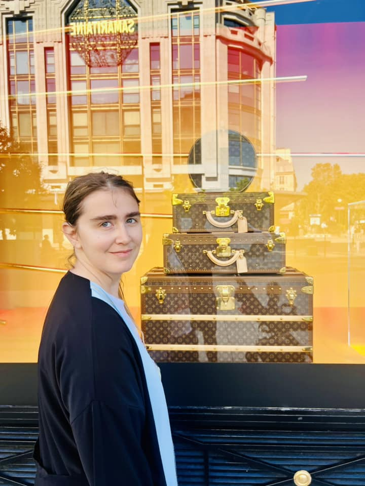

As the City of Lights prepares to host the Olympic Games, Paris transforms into a mesmerizing blend of history, culture, and athletic grandeur. There's an electric buzz in the air, and what better way to experience it than with your loved ones by your side? Rebecca, Ali, and I embarked on this unforgettable journey, where every street corner offered a new adventure and every monument stood as a testament to the city's vibrant spirit.
Our first day in Paris was nothing short of magical. We began with a leisurely stroll along the Seine, marveling at the beautiful bridges adorned with Olympic banners. The Eiffel Tower, bathed in the soft morning light, served as the perfect backdrop for our family photos. Ali's eyes widened with wonder as we ascended to the top, where the panoramic view of Paris left us all breathless. The excitement of the upcoming games added an extra layer of enchantment to the cityscape.
The heart of the Olympics was at Stade de France, where the world's best athletes competed for glory. We were lucky enough to snag tickets to a few events, and the atmosphere was electric. The cheers of the crowd, the thrill of the races, and the unity of people from all over the world created memories we'll cherish forever. Ali, despite being a toddler, seemed to soak in the excitement, clapping along with the crowd and waving his little flag with enthusiasm.
No trip to Paris would be complete without indulging in its culinary delights. From quaint cafes to bustling bistros, we savored croissants, crepes, and gourmet meals that tantalized our taste buds. One evening, we found ourselves in a cozy restaurant in Montmartre, where live music set the perfect mood. The aroma of freshly baked bread, the taste of rich chocolate, and the laughter we shared made every meal an experience to remember.
As we explored iconic landmarks like Notre-Dame, Louvre, and Champs-Élysées, we were constantly reminded of the timeless charm of Paris. The city's blend of old-world elegance and contemporary flair was even more pronounced during the Olympics. It was a celebration of not just sports, but of humanity, culture, and togetherness. For families like ours, it was the perfect time to visit Paris and create lifelong memories. So, pack your bags and join us in this magical city. Trust me, Paris at the Olympic time is an experience you don't want to miss!